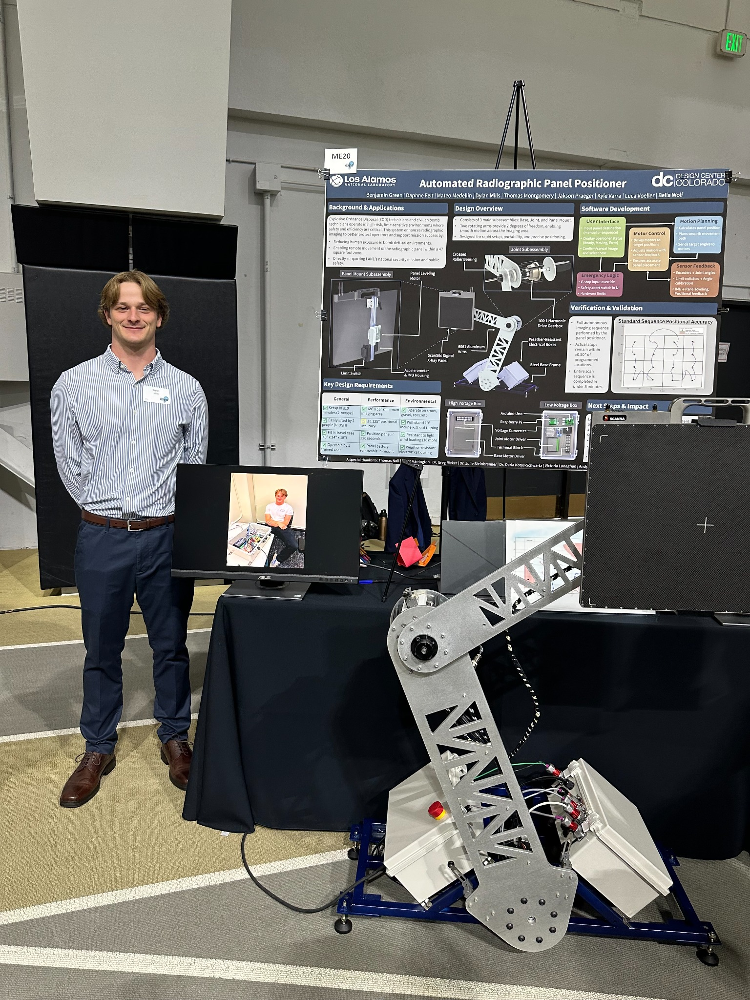
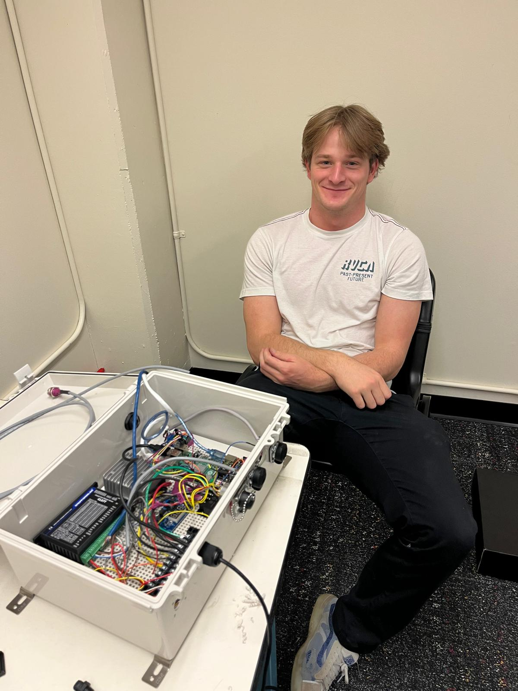

Precise motion.
Purposeful engineering.
An automated radiographic panel positioner. Built to move an X-ray panel remotely, with mechanical design, distributed controls, and electrical integration working as one.
Explore the engineering ↓
Articulated radiographic panel positioner.
Move the panel.
Keep the operator back.
Radiographic imaging helps bomb technicians inspect suspicious objects. Repositioning a panel manually brings the operator back toward the object. Our team developed a remotely controlled positioning system to automate that movement.
Two articulated arms cover the imaging area, while the base, panel mount, electrical system, and operator interface support deployment and scan sequences.
From design
to hardware.
The finished positioner brought the mechanical structure, electrical enclosure, controllers, and panel mount together into one working system.

Completed system

Electrical integration
Different voltages.
One integrated system.
The design connects an AC servo drive, a joint motor driver, microcontrollers, brakes, and sensors. Power conversion and wiring had to support their different requirements while keeping signal connections organized.

Designed around the interfaces.
The Raspberry Pi coordinates the system. CANopen links it to the base motor drive; USB serial connects the Arduino controllers; Ethernet connects the operator interface.
Separate power and signal cabling, common terminal blocks, and accessible connections supported assembly and troubleshooting.

Control across three layers.
Manual positioning, scan commands, system status, calibration, and abort controls.
Base drive commands, joint movement, encoder positions, and controller communication.
Position references, homing inputs, and prototype panel tilt measurement.
Built around the motion.
The mechanical design brings together a steel base, aluminum arms, geared joints, and a panel mount. These drawings show the physical system my electrical and controls work had to integrate with.

The base

The joint

The panel mount

Arm assembly
Open full-resolution PDF ↗

Base assembly
Open full-resolution PDF ↗

Motor mount
Open full-resolution PDF ↗
From sensor values
to physical movement.
The Python controller coordinates CANopen drive commands, encoder feedback, limit inputs, and motion profiles.
import canopen
import time
import numpy as np
import RPi.GPIO as GPIO
import asyncio
class BaseControl():
def __init__(self, mainControl):
"""
Initializes the BaseControl object with references to the main control.
Sets up CANopen communication, GPIO pins, and motor parameters.
"""
self.connected = False
self.moving = False
self.enabled = False
self.calibratingBaseRight = False
self.calibratingBaseLeft = False
self.calibratingJoint = False
self.calibratingPanel = False
self.mainControl = mainControl
self.network = canopen.Network()
self.node_id = 1
self.connect()
self.node = self.network.add_node(self.node_id, "Motors/CAN_EDS_212E_SV200.eds")
self.node.sdo.timeout = 1.5
self.node.nmt.wait_for_heartbeat()
try:
self.node.nmt.state = 'PRE-OPERATIONAL'
time.sleep(0.5)
except:
print("Setting state to pre-operational failed")
try:
self.node.nmt.state = 'OPERATIONAL'
time.sleep(0.5)
except:
print("Setting state to operational failed")
self.stepsPos = 0 #Steps
self.stepsZero = 0
self.pos = self.get_position_absolute(False)
self.master_pos = self.pos
self.limit_right = 7 # GPIO pin for the limit right
self.limit_left = 27 # GPIO pin for the limit left
self.limit_joint = 19 # GPIO pin for the joint limit switch
self.limit_panel = 26 # GPIO pin for the panel limit switch
GPIO.setwarnings(False)
GPIO.setmode(GPIO.BCM)
GPIO.setup(self.limit_left, GPIO.IN, pull_up_down=GPIO.PUD_UP)
GPIO.setup(self.limit_right, GPIO.IN, pull_up_down=GPIO.PUD_UP)
GPIO.setup(self.limit_joint, GPIO.IN, pull_up_down=GPIO.PUD_UP)
GPIO.setup(self.limit_panel, GPIO.IN, pull_up_down=GPIO.PUD_UP)
# Handle ESTOP cases
GPIO.cleanup()
GPIO.setmode(GPIO.BCM)
GPIO.setup(self.limit_left, GPIO.IN, pull_up_down=GPIO.PUD_UP)
GPIO.setup(self.limit_right, GPIO.IN, pull_up_down=GPIO.PUD_UP)
GPIO.setup(self.limit_joint, GPIO.IN, pull_up_down=GPIO.PUD_UP)
GPIO.setup(self.limit_panel, GPIO.IN, pull_up_down=GPIO.PUD_UP)
# GPIO.add_event_detect(self.limit_left, GPIO.RISING, callback=self.left_limit_interrupt, bouncetime=300)
# GPIO.add_event_detect(self.limit_right, GPIO.RISING, callback=self.right_limit_interrupt, bouncetime=300)
async def check_right_limit(self):
"""
Continuously monitors the right limit switch and triggers the interrupt
if the switch is activated.
"""
while True:
last_state = GPIO.input(self.limit_right)
await asyncio.sleep(0.05)
if GPIO.input(self.limit_right):
if last_state == 0:
self.right_limit_interrupt()
async def check_left_limit(self):
"""
Continuously monitors the left limit switch and triggers the interrupt
if the switch is activated.
"""
while True:
last_state = GPIO.input(self.limit_left)
await asyncio.sleep(0.05)
if GPIO.input(self.limit_left):
if last_state == 0:
self.left_limit_interrupt()
async def check_joint_limit(self):
"""
Continuously monitors the joint limit switch and triggers the interrupt
if the switch is activated.
"""
while True:
last_state = GPIO.input(self.limit_joint)
await asyncio.sleep(0.05)
if not GPIO.input(self.limit_joint):
if last_state == 1:
self.joint_limit_interrupt()
async def check_panel_limit(self):
"""
Continuously monitors the panel limit switch and triggers the interrupt
if the switch is activated.
"""
while True:
time.sleep(0.05)
last_state = GPIO.input(self.limit_panel)
await asyncio.sleep(0.05)
if GPIO.input(self.limit_panel):
if last_state == 0:
self.panel_limit_interrupt()
def right_limit_interrupt(self):
"""
Handles the event when the right limit switch is triggered.
Stops the motor and performs calibration if necessary.
"""
print("Right limit interrupt triggered")
self.mainControl.disable_motor()
self.mainControl.arduino.writeDataToArduino("abort",0,0)
if self.calibratingBaseRight:
print("Calibrating base")
self.calibratingBaseRight = False
time.sleep(0.25)
self.zero_base()
else:
self.mainControl.ethernet.send_message(f"Error:Right Limit Switch Hit")
def left_limit_interrupt(self):
"""
Handles the event when the left limit switch is triggered.
Stops the motor and performs calibration if necessary.
"""
print("Left limit interrupt triggered")
self.mainControl.disable_motor()
self.mainControl.arduino.writeDataToArduino("abort",0,0)
if self.calibratingBaseLeft:
print("Calibrating base")
self.calibratingBaseLeft = False
time.sleep(0.25)
self.zero_base()
else:
self.mainControl.ethernet.send_message(f"Error:Left Limit Switch Hit")
def joint_limit_interrupt(self):
"""
Handles the event when the joint limit switch is triggered.
Stops the motor and performs calibration if necessary.
"""
print("Joint limit interrupt triggered")
if self.calibratingJoint:
self.mainControl.arduino.writeDataToArduino("abort",0,0)
print("Calibrating joint")
self.calibratingJoint = False
time.sleep(0.25)
self.mainControl.arduino.writeDataToArduino("zero",0,0)
self.mainControl.theta2 = 0
def panel_limit_interrupt(self):
"""
Handles the event when the panel limit switch is triggered.
Stops the motor and performs calibration if necessary.
"""
print("Panel limit interrupt triggered")
self.mainControl.disable_motor()
self.mainControl.arduino.writeDataToArduino("abort",0,0)
if self.calibratingPanel:
print("Calibrating panel")
self.calibratingPanel = False
time.sleep(0.25)
self.mainControl.ethernet.send_message(f"Panel_Calibrate_Here")
else:
self.mainControl.ethernet.send_message(f"Error:Panel Limit Switch Hit")
def connect(self):
"""
Establishes a connection to the CAN bus for motor control.
"""
if self.connected:
print("Already connected")
return False
if self.moving:
print("Cannot connect while moving")
return False
self.network.disconnect()
self.network.connect(bustype='socketcan', channel='can0', bitrate=125000)
time.sleep(0.5)
print("Connected to CAN bus")
self.connected = True
return True
def disconnect(self):
"""
Disconnects from the CAN bus for motor control.
"""
if not self.connected:
print("Already disconnected")
return False
self.network.disconnect()
self.connected = False
print("Disconnected from CAN bus")
return True
def enable_motor(self):
"""
Enables the motor by sending the appropriate control commands.
"""
if self.enabled:
print("Motor already enabled")
return False
self.node.sdo[0x6040].raw = 0x06 #Shutdown
time.sleep(0.1)
self.node.sdo[0x6040].raw = 0x07 #Switch on
time.sleep(0.1)
self.node.sdo[0x6040].raw = 0x0F #Enable operation
time.sleep(0.1)
self.enabled = True
print("Drive enabled")
return True
def disable_motor(self):
"""
Disables the motor by sending the appropriate control commands.
"""
if not self.enabled:
print("Motor already disabled")
return False
self.node.sdo[0x6040].raw = 0x06
time.sleep(0.1)
self.enabled = False
print("Drive disabled")
return True
#Gets the position of the motor in degrees (True, Default) or encoder counts (False)
def get_position_absolute(self, inDegrees=True):
"""
Retrieves the absolute position of the motor in degrees or encoder counts.
"""
try:
if inDegrees:
print(f"Current Position Absolute: {self.node.sdo[0x6064].raw/100/10000*360}")
return self.node.sdo[0x6064].raw/100/10000*360
else:
print(f"Current Position Absolute: {self.node.sdo[0x6064].raw}")
return self.node.sdo[0x6064].raw
except:
print("Error getting position absolute")
# self.mainControl.ethernet.send_message(f"Error:Base motor cannot read absolute position")
return self.pos
def get_position_relative(self, inDegrees=True):
"""
Retrieves the relative position of the motor in degrees or encoder counts.
"""
try:
if inDegrees:
return (self.node.sdo[0x6064].raw - self.stepsZero)/100/10000*360
else:
return self.node.sdo[0x6064].raw
except:
print("Error getting position relative")
# self.mainControl.ethernet.send_message(f"Error:Base motor cannot read relative position")
return self.pos - self.stepsZero
def zero_base(self):
"""
Sets the current position of the motor as the zero position.
"""
self.stepsZero = self.get_position_absolute(False)
def set_zero(self, pos_deg):
"""
Sets a specific position in degrees as the zero position.
"""
self.stepsZero = self.convert_deg_to_pos(pos_deg)
#Converts degrees to encoder counts
def convert_deg_to_pos(self, angle):
"""
Converts an angle in degrees to encoder counts.
"""
return angle/360*10000*100
#Converts encoder counts to degrees
def convert_pos_to_deg(self, pos):
"""
Converts encoder counts to an angle in degrees.
"""
return pos/10000/100*360
#Sets current set point of the motor, not sure if this is what it actually does, need to look into it
def set_angle(self, counts):
"""
Sets the current setpoint of the motor in encoder counts.
"""
self.node.sdo[0x6064].raw = counts
self.pos = counts
def move_motor(self, target_position_deg, velocity=1000, acceleration=50, deceleration=50, relative=False):
"""
Moves the motor to a target position with specified velocity, acceleration,
and deceleration. Supports both absolute and relative movements.
"""
#Checks if Motor is ready to move
if(self.enabled == False):
print("Cannot move motor, motor is not enabled.")
self.mainControl.ethernet.send_message(f"Error:Need to enable base motor to move it")
return
self.moving = True
if relative:
start_position = self.get_position_relative(inDegrees=False)
# Enable Profile Position Mode
self.node.sdo[0x6060].raw = 0x01 # 0001h for Profile Position Mode
time.sleep(0.25)
target_position = target_position_deg/360*10000*100
if not relative:
target_position = target_position + self.stepsZero #Add the zero position to the target position
self.node.sdo[0x607A].raw = target_position
self.node.sdo[0x6081].raw = velocity
self.node.sdo[0x6083].raw = acceleration
self.node.sdo[0x6084].raw = deceleration
control_word = 0x001F # Enable set-point (Bit 4 High)
if relative:
control_word |= 0x40 # Set relative movement (Bit 6 High)
self.node.sdo[0x6040].raw = control_word # Bit 4 = New Setpoint
time.sleep(0.1)
while not (self.node.sdo[0x6041].raw & 0x1000): # Check bit 12
time.sleep(0.01)
print("Setpoint acknowledged.")
# Clear "New Set-Point" bit
self.node.sdo[0x6040].raw = 0x000F # Clear Bit
time.sleep(0.1)
print("Motion started.")
# Wait for the motor to reach the target position
threshold = 10
i = 0
if relative:
current_position = self.get_position_relative(inDegrees=False) - start_position
else:
current_position = self.get_position_absolute(inDegrees=False)
while not (np.isclose(current_position, target_position, atol = threshold)) and self.enabled and not self.mainControl.waiting_on_abort:
if relative:
current_position = self.get_position_relative(inDegrees=False) - start_position
else:
current_position = self.get_position_absolute(inDegrees=False)
time.sleep(0.25)
i = i + 1
if i > 200:
print("Timeout (20s) waiting for target position")
self.mainControl.ethernet.send_message(f"Error:Base motor movement timeout")
break
print("Finished Moving Base")
self.moving = False
Choose the hardware.
Check the assumptions.
Motor selection was supported by MATLAB calculations for centers of mass, inertia, and joint torque. Comparing loads across arm configurations helped the team evaluate motor and gearbox combinations.
Calculations for panel-leveling torque, backlash, and motor conversion helped connect estimated loads to component choices.

The prototype taught us
where to improve.
Validation included loaded motor testing, full scan sequences, VICON motion capture, and field evaluation with FBI and civilian EOD technicians.

Repeatability ≠ absolute accuracy.
Sequence trials measured repeatability of approximately 0.081 inches across sequence trials. The ±0.125-inch absolute accuracy target was not achieved across the full scan area.
Testing identified backlash and compliance at the base coupling as major contributors to positioning error. Nonlinear behavior limited the effectiveness of the software compensation.
That distinction matters: consistently returning near a location does not guarantee that the location matches the commanded coordinates.
The system at a glance.
A one-page overview of the architecture, design requirements, and test results.
Engineering is in the integration.
Interested in my work across hardware, sensing, and controls?
Let’s talk ↗